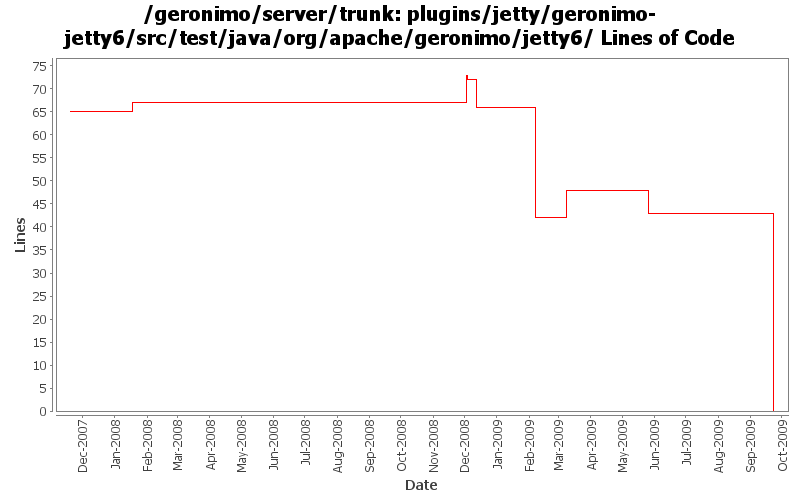

[root]/plugins/jetty/geronimo-jetty6/src/test/java/org/apache/geronimo/jetty6
 connector
(0 files, 0 lines)
connector
(0 files, 0 lines)

| Author | Changes | Lines of Code | Lines per Change |
|---|---|---|---|
| Totals | 30 (100.0%) | 84 (100.0%) | 2.8 |
| djencks | 13 (43.3%) | 73 (86.9%) | 5.6 |
| dwoods | 7 (23.3%) | 7 (8.3%) | 1.0 |
| gawor | 3 (10.0%) | 3 (3.6%) | 1.0 |
| jbohn | 1 (3.3%) | 1 (1.2%) | 1.0 |
| gdamour | 4 (13.3%) | 0 (0.0%) | 0.0 |
| akulshreshtha | 2 (6.7%) | 0 (0.0%) | 0.0 |
some pom cleanup and remove old jetty6 plugin files
0 lines of code changed in 6 files:
GERONIMO-4645 use jacc ejb ws auth for jetty6, simplify SOAPHandler interface
3 lines of code changed in 1 file:
GERONIMO-4645 Make ejb ws security more jacc friendly, implement transport guarantees for jetty7 using jacc. See jira for more comments
3 lines of code changed in 1 file:
prefer openejb-jar.xml instead of geronimo-openejb.xml descriptor in ejb ws deployer and pass additional properties object to SoapHandlers
3 lines of code changed in 1 file:
GERONIMO-4553 Make web use of security realms depend on plugin visibility; make console expose the 'global' attribute for configuration (renamed from 'publish'). Also merges in geronimo-security changes from sandbox branches.
16 lines of code changed in 2 files:
GERONIMO-4577 upgrade jetty to 6.1.14. There are dependency problems I don't understand with 6.1.15, but this gets the api changes in.
7 lines of code changed in 1 file:
GERONIMO-4531, GERONIMO-4523 Simplify builder collections. Make security principal-role mappings independent of the application
38 lines of code changed in 2 files:
support for specifying a list of http methods that should be secured for ejb-based web services (GERONIMO-4015)
0 lines of code changed in 2 files:
GERONIMO-4437 revert jetty 6.1.14 changes
1 lines of code changed in 1 file:
GERONIMO-4445, GERONIMO-4415 Fix up GeronimoLoginConfiguration and SimpleCredentialStore, use in monitoring console agent
2 lines of code changed in 1 file:
GERONIMO-4437 Upgrade to Jetty 6.1.14
7 lines of code changed in 1 file:
Add private-classes element which allows specific classes to be hidden from all child configurations. In effect, they are private to the configuration.
(GERONIMO-4403) Provide a mechanism to hide specific classes of a configuration to all its children
0 lines of code changed in 2 files:
GERONIMO-3149 Some gbeans to support jaspi components and a little bit of reorganization
0 lines of code changed in 2 files:
GERONIMO-3758 put the default jacc provider implementation classes in a separate package
4 lines of code changed in 1 file:
GERONIMO-3738 Expose new compactPath (or, expose security vulns) jetty parameter
0 lines of code changed in 2 files:
* move classes depending on geronimo-clustering from geronimo-jetty6 to
geronimo-jetty6-clustering-wadi;
* remove geronimo-clustering dependency from geronimo-jetty6;
* do not load clustering-wadi configuration.
This way the clustering config. does not need to be used when clustering
is actually not used.
This fixes the Jetty part of GERONIMO-3721 WADI modules prevent Geronimo
from starting when offline
0 lines of code changed in 2 files:
GERONIMO-3608 Move Jetty*Stats and Jetty*StatsImpl to geronimo-management
0 lines of code changed in 2 files: